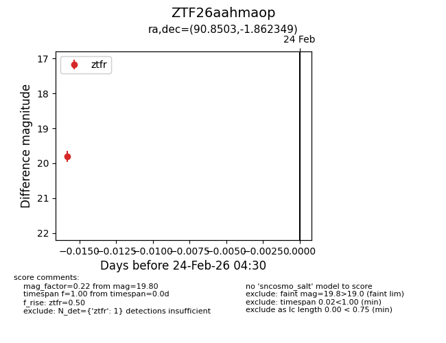
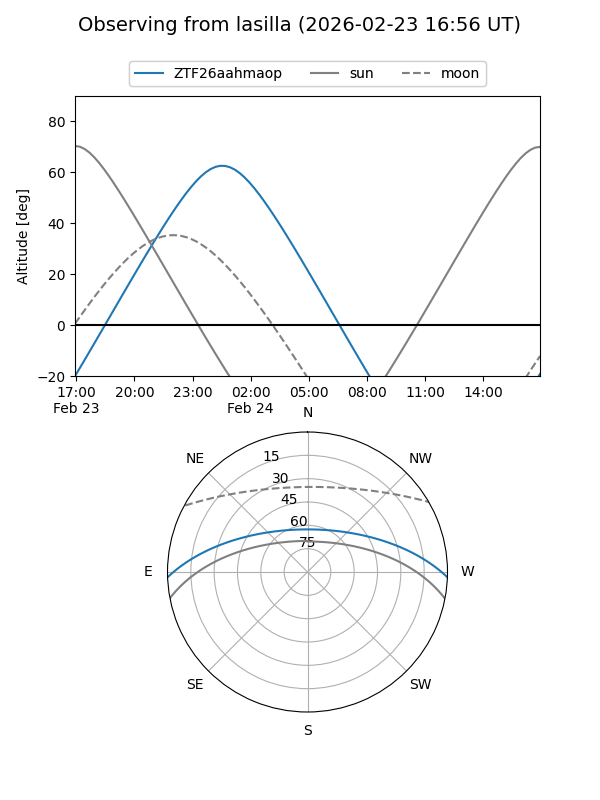
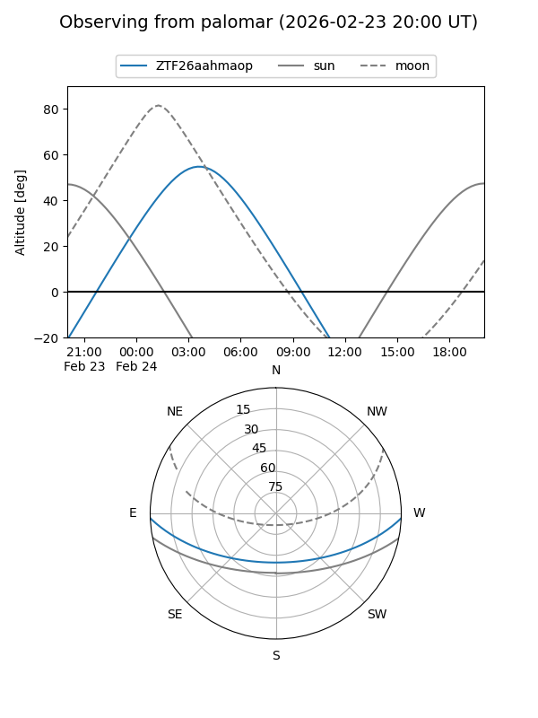

ZTF26aahmaop
Target ZTF26aahmaop at 2026-02-24 09:08
Aliases and brokers:
FINK: link
Lasair: link
ALeRCE: link
alt names
ZTF26aahmaop (ztf,fink_ztf)
Coordinates:
equatorial (ra, dec) = 90.8503,-1.86235
equatorial (HMS+DMS) = 06:03:24.07,-01:51:44.46
galactic (l, b) = (209.0753,-11.53106)
Flags:
Photometry:
last ztfr=19.80
1 ztfr detections
Lightcurve

Visibility


Additional plots